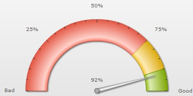
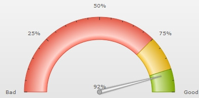

| Using FusionCharts jQuery plugin | ||||||||||||||||||||||||||||
|
FusionWidgets XT comes with a jQuery plugin that lets you use the jQuery framework and format to render FusionWidgets anywhere within a web page. FusionWidgets uses FusionCharts jQuery plugin that takes care of all the products of FusionCharts XT Suite including FusionWidgets XT. Using FusionCharts jQuery plugin, you can render FusionWidgets anywhere within a web page, change chart type, update and retrieve chart data, update functional and cosmetic settings and use all existing features of FusionWidgets. To aid your understanding of this section, we recommend you to go through the following sections of documentation (if you've not already read them):
In this page, we will see how to use the FusionCharts jQuery plugin to render charts and gauges from FusionWidgets pack. Code examples and data files discussed in this section are present in Download Package > Code > jQuery folder. |
||||||||||||||||||||||||||||
| Setting up FusionCharts jQuery plugin | ||||||||||||||||||||||||||||
|
Setting up of FusionCharts jQuery plugin is as simple as putting an additional reference to the plugin file (FusionCharts.jqueryplugin.js) as shown below: <script type="text/javascript" src="Charts/jquery.min.js"></script> <script type="text/javascript" src="Charts/FusionCharts.js"></script> <script type="text/javascript" src="Charts/FusionCharts.jqueryplugin.js"></script> Note: The required JavaScript files are available in Download Package > Charts folder. This completes the setup. Please note that you need to follow all the primary steps required for FusionWidgets to perform, namely:
You do not need to include FusionCharts.HC.js and FusionCharts.HC.Widgets.js in your code. FusionCharts.js will automatically load these files based on requirement. Now, let's create our first chart using FusionCharts jQuery plugin. We will start with the same Customer satisfaction data which we have created in Creating your first chart page as shown below: | ||||||||||||||||||||||||||||
| ||||||||||||||||||||||||||||
|
We had already saved this data as Data.xml.
The code to use this data and generate an Angular gauge using FusionCharts jQuery plugin is as follows: | ||||||||||||||||||||||||||||
| ||||||||||||||||||||||||||||
|
The resultant chart will be rendered as shown in the image below:  See it live! How it works? We save the above code as FirstChart.html. In the above code we have:
The insertFusionCharts method renders a chart in the selected element. It takes a set of key/value pairs representing chart configurations as parameter. The set is passed as an Object. The properties of the parameter-object are as follows: | ||||||||||||||||||||||||||||
| ||||||||||||||||||||||||||||
What happens if Flash player is not available? | ||||||||||||||||||||||||||||
| Rendering the chart as JavaScript | ||||||||||||||||||||||||||||
|
You can also render JavaScript chart using the same method. All you need to do is to explicitly set the renderer property to javascript. In case you are running the sample from local file system, you will also need to set the chart data as string. The code snippet below contains the modified sample: $("#chartContainer").insertFusionCharts({
swfUrl: "Charts/AngularGauge.swf",
renderer : 'JavaScript',
width: "400",
height: "200",
id: "myChartId",
dataFormat: "xml",
dataSource: "<chart lowerLimit='0' upperLimit='100' lowerLimitDisplay='Bad' upperLimitDisplay='Good' numberSuffix='%' showValue='1'> "+
"<colorRange> "+
"<color minValue='0' maxValue='75' code='FF654F'/> "+
"<color minValue='75' maxValue='90' code='F6BD0F'/> "+
"<color minValue='90' maxValue='100' code='8BBA00'/> "+
"</colorRange> "+
"<dials> "+
"<dial value='92' /> "+
"</dials> "+
"</chart>"
});
The resultant chart will look like the image shown below:  See it live! |
||||||||||||||||||||||||||||
| Using JSON as data source | ||||||||||||||||||||||||||||
|
Apart from XML you can also provide data in JSON format. You can provide JSON as JavaScript Object, as JSON string or as a URL. To provide data as JSON you need to pass the JSON data source to dataSource property and set json or jsonurl to dataFormat property. The code snippet below shows how you can pass JSON Object as data source: $("#chartContainer").insertFusionCharts({
swfUrl: "Charts/AngularGauge.swf",
width: "400",
height: "200",
id: "myChartId",
dataFormat: "json",
dataSource: {
"chart": {
"lowerlimit": "0",
"upperlimit": "100",
"lowerlimitdisplay": "Bad",
"upperlimitdisplay": "Good",
"numbersuffix": "%",
"showvalue": "1"
},
"colorrange": {
"color": [
{
"minvalue": "0",
"maxvalue": "75",
"code": "FF654F"
},
{
"minvalue": "75",
"maxvalue": "90",
"code": "F6BD0F"
},
{
"minvalue": "90",
"maxvalue": "100",
"code": "8BBA00"
}
]
},
"dials": {
"dial": [
{
"value": "92"
}
]
}
}
});
See it live! The code snippet below shows how you can pass JSON string as data source: $("#chartContainer").insertFusionCharts({
swfUrl: "Charts/AngularGauge.swf",
width: "400",
height: "200",
id: "myChartId",
dataFormat: "json",
dataSource: '{ \
"chart": { \
"lowerlimit": "0", \
"upperlimit": "100", \
"lowerlimitdisplay": "Bad", \
"upperlimitdisplay": "Good", \
"numbersuffix": "%", \
"showvalue": "1" \
}, \
"colorrange": { \
"color": [ \
{ \
"minvalue": "0", \
"maxvalue": "75", \
"code": "FF654F" \
}, \
{ \
"minvalue": "75", \
"maxvalue": "90", \
"code": "F6BD0F" \
}, \
{ \
"minvalue": "90", \
"maxvalue": "100", \
"code": "8BBA00" \
} \
] \
}, \
"dials": { \
"dial": [ \
{ \
"value": "92" \
} \
] \
} \
}'
});
See it live! The code snippet below shows how you can pass a JSON URL as data source: $("#chartContainer").insertFusionCharts({
swfUrl: "Charts/AngularGauge.swf",
width: "400",
height: "200",
id: "myChartId",
dataFormat: "jsonurl",
dataSource: "Data.json"
});
See it live! |
||||||||||||||||||||||||||||
| Appending and Pre-pending a chart in an element | ||||||||||||||||||||||||||||
The insertFusionCharts method renders a chart inside a container element after removing any existing element present inside the container element. Using the appendFusionCharts method, you can also insert charts to the end of the container element, thus preserving all existing element. An example is shown below: $("#chartContainer").appendFusionCharts({
swfUrl: "Charts/AngularGauge.swf",
dataSource: "NextQuarter.xml",
dataFormat: "xmlurl",
width: "200",
height: "100",
id: "myChartNextID"
});
See it live! You can also insert charts to the beginning of the container element using prependFusionCharts method as shown below: $("#chartContainer").prependFusionCharts({
swfUrl: "Charts/AngularGauge.swf",
dataSource: "PreviousQuarter.xml",
dataFormat: "xmlurl",
width: "200",
height: "100",
id: "myChartPrevID"
});
See it live! The parameters of the appendFusionCharts and the prependFusionCharts methods are same as the parameters of the insertFusionCharts method. |
||||||||||||||||||||||||||||
| Changing type of an existing chart | ||||||||||||||||||||||||||||
|
You can also change chart type of an existing chart. The updateFusionCharts methods helps you to achieve this by modifying the swfUrl property as shown below:
$("#chartContainer").updateFusionCharts({"swfUrl": "Charts/Thermometer.swf"});
See it live! |
||||||||||||||||||||||||||||
| Changing data of an existing chart | ||||||||||||||||||||||||||||
The updateFusionCharts methods helps you to change data of an existing chart as shown in the code below: $("#chartContainer").updateFusionCharts({"dataSource": XMLAsString, "dataFormat": "xml"});
See it live! |
||||||||||||||||||||||||||||
| Changing width and height of an existing chart | ||||||||||||||||||||||||||||
The updateFusionCharts method also helps in changing the dimensions of an existing chart. The code snippet below shows how this can be achieved: $("#chartContainer").updateFusionCharts({ width : 280, height : 200 });See it live! |
||||||||||||||||||||||||||||
| Other features and options | ||||||||||||||||||||||||||||
|
In this section we have showcased some of the basic methods of FusionCharts jQuery plugin and their uses. FusionCharts jQuery plugin additionally provides methods to:
We will discuss the complete API and the features of FusionCharts jQuery plugin in FusionWidgets & jQuery section. |
||||||||||||||||||||||||||||
| Watch live examples | ||||||||||||||||||||||||||||
Listed below are some of the examples using various methods of FusionWidgets jQuery samples: |
||||||||||||||||||||||||||||